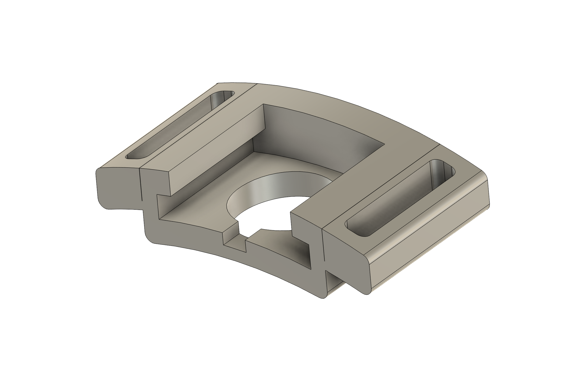
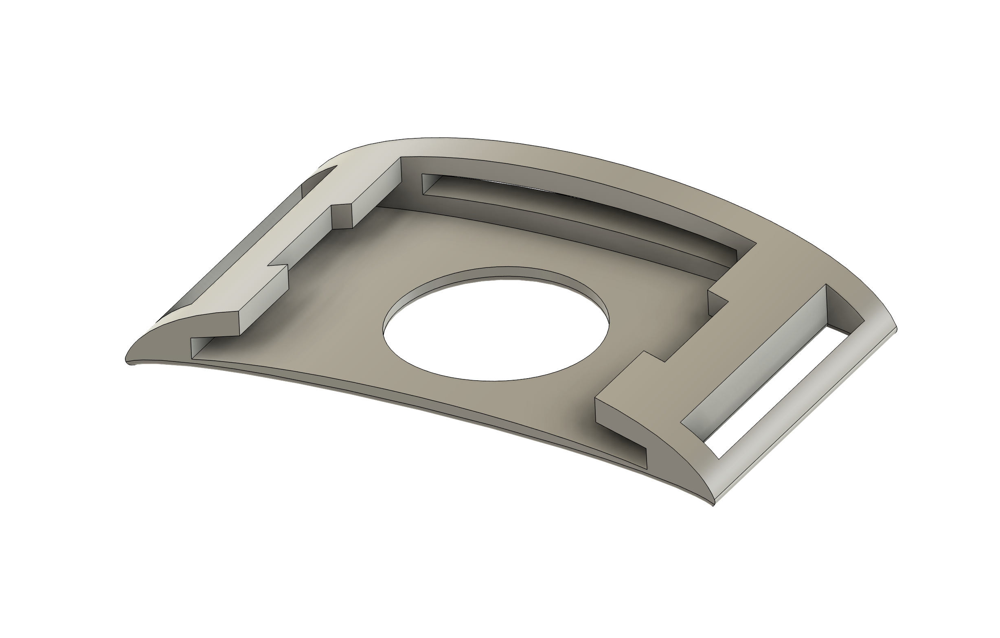
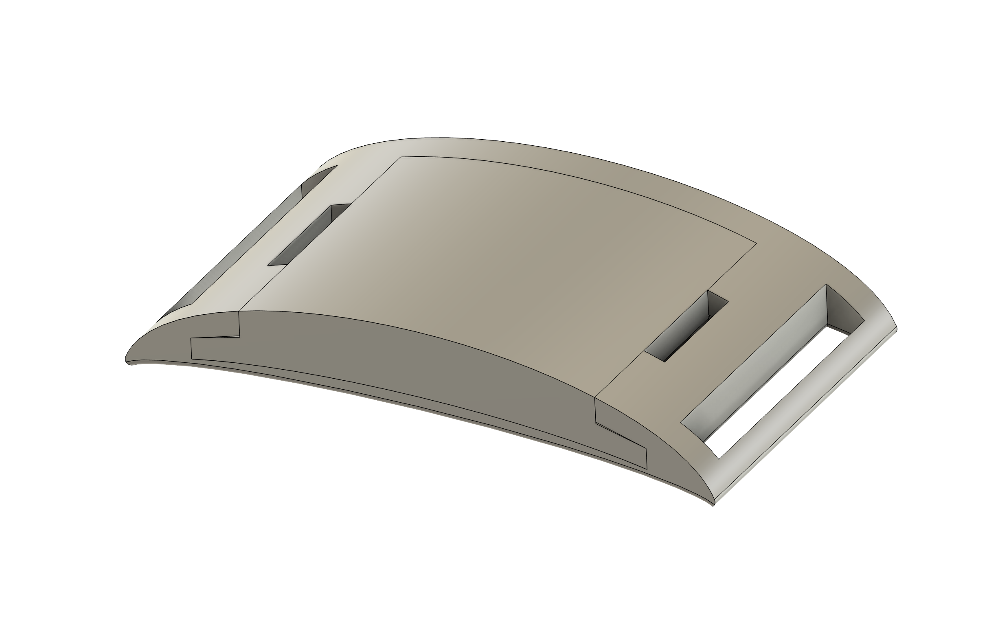

MEDICAL ROBOTICS · PRODUCT DEVELOPMENT · TEAM LIMBO
Prosthetic Feedback Component Design
Developing an accessible transradial prosthetic arm featuring a custom haptic feedback subsystem for tactile force communication.
Overview
As part of Team LIMBO in the Medical Robotics Club, our goal was to create a low-cost transradial prosthetic that bridges affordability with functional usability. While mechanical development focused on hand articulation, my core focus centered on the haptic feedback subsystem—designed to translate physical contact forces experienced at the prosthetic fingertips into intuitive sensory stimuli for the user.
To achieve this, I engineered a wearable armband integrating vibration motors that communicate fingertip force levels directly through tactile feedback.
My Contribution
- Subsystem Ownership: Led the mechanical design and physical integration of the haptic feedback armband.
- Design Constraints & Engineering Requirements:
- Profile & Size: Minimized physical bulk while maintaining enough internal volume to house the vibration motors securely.
- Material Flexibility: Utilized flexible 3D printing materials (TPU) to conform comfortably to the user's arm contour.
- Component Removability: Designed modular housings ensuring motors could be easily inserted, removed, or swapped during rapid testing and iteration.
- Adjustability & Contact: Engineered a specialized gap structure across the three motor housings so they could slide and reposition along the armband, aligning with key sensory points on the user's arm and guaranteeing direct skin-motor contact.
- Prototyping & Integration: Iterated over six CAD versions of the motor housing, 3D printed them in TPU, and guided their final physical integration into the armband assembly.
Design Evolution & Visuals
Below is a visual progression comparing the original baseline design, the modified TPU iteration, and the final assembled TPU design.
Original PLA Design

Modified TPU Iteration

New Design Assembly
